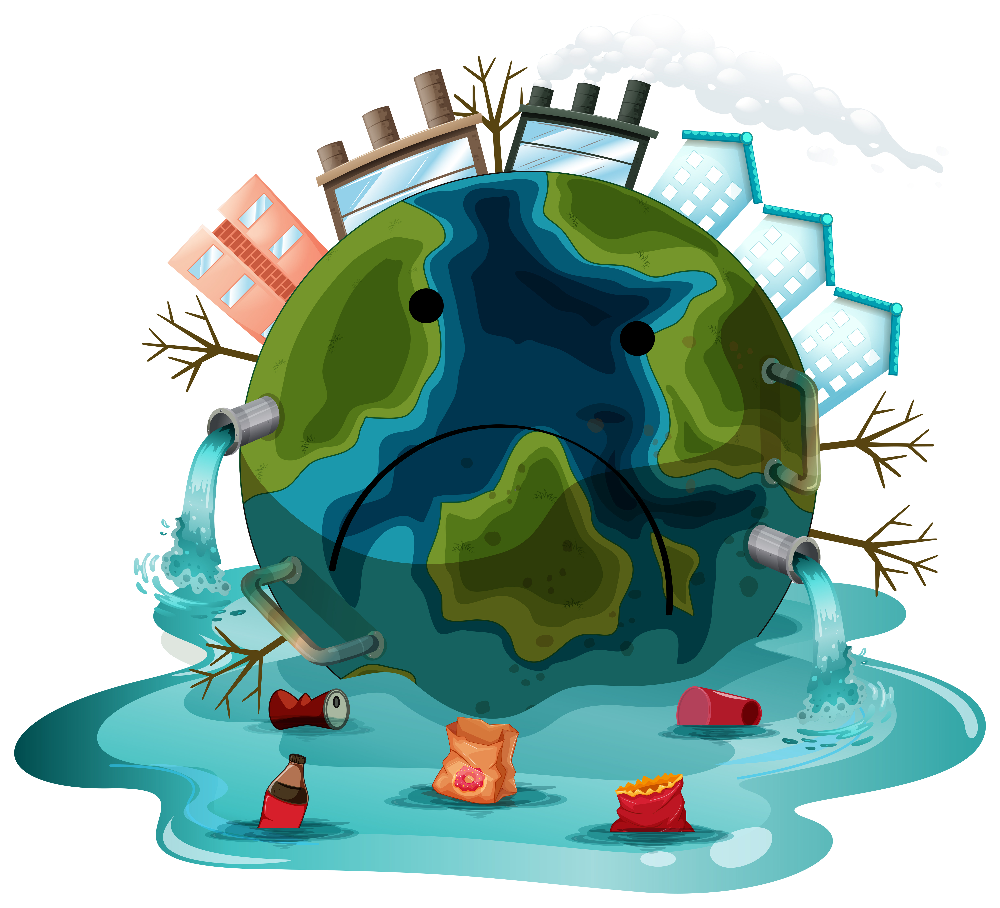
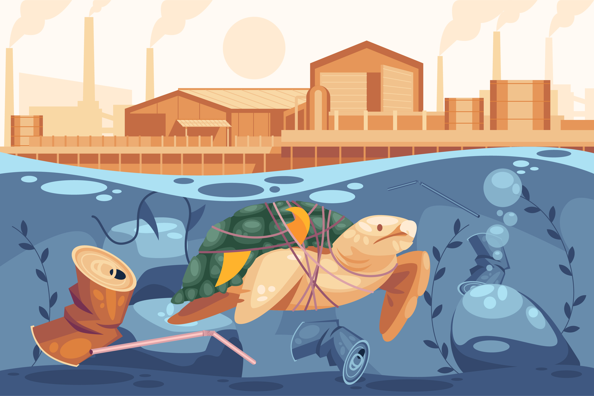

The Impact of Climate Change on Biodiversity

Introduction
Climate change has long been predicted, but it's now undeniably a global problem, impacting everyone and everything. The sheer number of distinct species inhabiting our planet is what we define as biodiversity. This is critical for the overall ecological balance and for providing a variety of ecosystem services and promoting human wellbeing. This document presents an analysis of the consequences of climate change such as ecosystem breakdowns, disruption of interspecies connections diversity loss.
Climate Change and Ecosystem Disruption

The most notable consequence of climate change includes the modifications of ecosystems. For instance the increase in global temperatures, changes in precipitation, as well as the increase in the intensity and the number of extreme climate events results in fragmentation and deterioration of habitats. As an example, tropical rain forests which contain a large number of species are experiencing severe stress from changes in temperature and rainfall patterns. Many climates which are already warm have translated this into altered seasonal cycles affecting the phenology of plants and their flowering and fruiting stages along with animals that rely on the plants.
Global warming causes the essential deterioration of polar ice caps that serves as another clear case. The warming of Arctic together with Antarctic regions leads to loss of critical habitat for polar bears and penguins which disrupts their breeding along with hunting activities. Coral reefs suffer from coral bleaching caused by rising ocean temperatures which makes their symbiotic algae vital to coral health release from their bodies. Marine life suffers due to coral reef decline while millions of people risk losing their food security and revenue sources that depend on coral reefs.
Effects on Species Diversity
Climate change creates survival challenges for species by utilizing various routes of ecosystem stress. Species need to move toward different habitats when temperature and precipitation changes drive them to search for suitable environmental conditions in new locations. Different species possess varying abilities to relocate or adjust their habitats across new environmental settings. The extinction of local species alongside diminished genetic diversity brings deterioration to feeding systems.
Multiple species show evidence of stress based on their changes in distribution areas according to research findings. Research shows temperate butterflies along with many other species document their northward movement as well as up-slope advancement. Migratory birds experience adverse effects when temperature and food availability patterns during their migrations fail to match breeding season requirements. The stress on native species intensifies when invasive species that prefer warmer conditions successfully establish themselves because this leads to competitive exclusion which contributes to additional extinction rates.
Impact on Habitat Integrity
A species requires unaltered habitats to thrive and survive. The environmental phenomenon of climate change leads to habitat destruction by means of processes involving desertification together with rising sea levels and intensified wildfire occurrence. Rising storm surges from rising sea waters destroy coastal habitats by overwhelming terrestrial regions which reduces vital storm-protection areas and marine species reproduction zones.
Many regions particularly the western United States and Australia experience rising fire frequency along with increasing fire strength. The fires devastate huge areas of forests and grassland which produce broken ecosystems that prevent animal movement and minimize necessary sources for survival like food and protection. The alternative pattern of burned and unburned zones creates discontinuities in the environment since organisms find it harder to rebound from disruptions.
Consequences on Ecological Services
Organisms in ecosystems deliver multiple services to environments in addition to species diversity. Humans rely fundamentally on ecosystem services which include water purification alongside soil fertility and carbon sequestration and pollination because of biodiversity. The effects of climate change on these services create extensive outcomes affecting natural ecosystems together with human societies.
Bees and butterflies together with other pollinators serve as essential agents for reproductive success of numerous plants that include crops in agricultural production systems. Climate changes cause blooms to shift their seasons thus interrupting the match between flowering times of plants and pollinator presence. Wetland water quality and their capability to cleanse pollutants are impaired by shifting temperatures and precipitation in aquatic areas. The complete or partial elimination of these ecosystem functions results in agricultural productivity decline and increases human groups' exposure to environmental threats.
Mitigation and Adaptation Strategies
The solution to reverse biodiversity damage from climate change requires both climate change reduction and adaptive measures for existing changes. The main goal of mitigation activities involves lowering greenhouse gas production by using renewable power systems and improved energy conservation techniques with forest regrowth programs. Mitigation efforts limit future climate change outcomes thus they minimize habitat destruction together with species population disturbances.
Managers implement adaptation strategies by employing methods which enhance the stability of ecosystems. To allow species migration and ecosystem adaptation protected areas need to be established while wildlife corridors should be created and degraded habitats require restoration. Conservation biologists work towards developing new strategies including assisted migration through which species receive planned transfers to regions possessing more favorable climatic environments.
The Role of International Cooperation
Climate change exists as a worldwide matter requiring essential international teamwork. The Paris Agreement provides basic frameworks which enable international collaboration to manage emissions reduction as well as adaptation funding initiatives. The Convention on Biological Diversity together with other initiatives work to protect biodiversity through sustainable methods while fighting against climate change effects. For successful policies to take shape both scientific evidence must be powerful and governments need to exercise political force to create regulations that safeguard natural ecosystems.
Case Studies and Future Outlook
Various real-world examples demonstrate how the combination of both obstacles and opportunities exists when fighting biodiversity reduction due to climate change. Research about and conservation efforts for the Great Barrier Reef in Australia work simultaneously with local initiatives alongside international studies because of its extreme coral bleaching. European mountain ranges have prompted scientists to develop conservation programs targeted at high-altitude ecosystem protection caused by alpine species distribution changes.
The destiny of biodiversity under climate change conditions is presently uncertain. The serious situation triggers concern yet scientists along with conservation experts and policymakers work together to develop effective strategies that fight climate change impacts. Ecosystem resilience can be maintained alongside ongoing life diversity support through continuous monitoring along with adaptive management practices.
Conclusion
Climate change produces widespread significant effects that affect biodiversity at multiple levels. Both short-term and enduring consequences arise from ecological changes and species relocation and ecosystem service deterioration. The solution to these issues demands complete mitigation programs combined with adaptation tactics while needing support from international partnerships along with precise conservation initiatives. Scientific exploration into climate change complexities reveals that biodiversity preservation stands above being a green requirement because it maintains global stability.